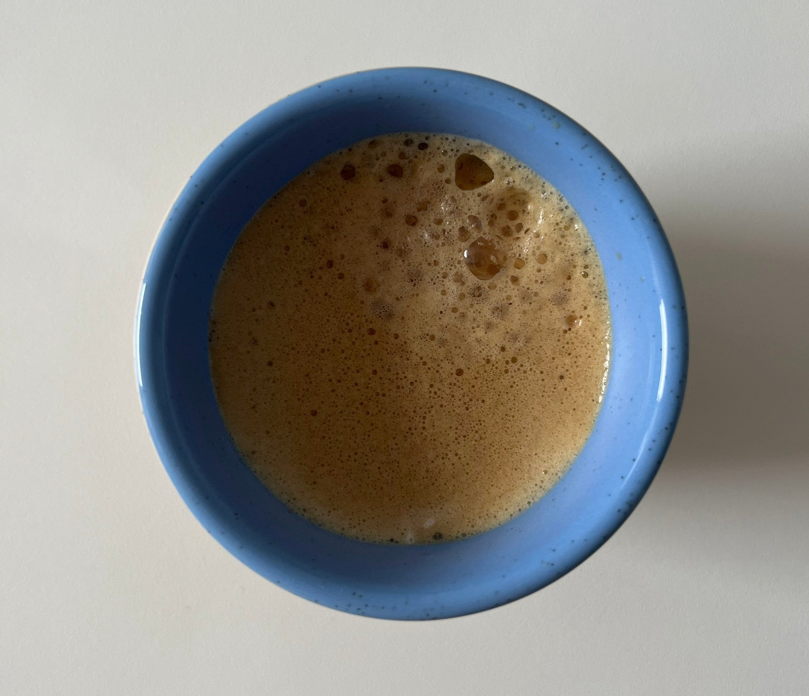
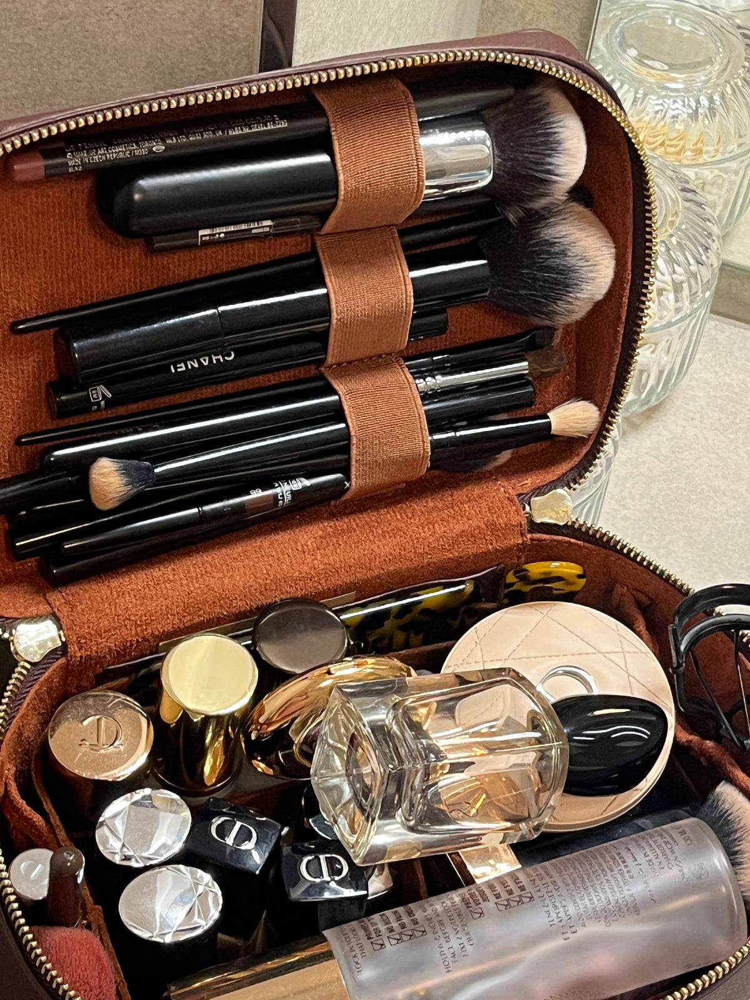

"I overcame the fear of rejection. I overcame shyness. And in today's world, that's a bigger win than any sale."
Juliette
26 — Co-founder, GermanyJuliette co-built Maison en Cuir from scratch, a made-to-order leather goods brand where every vanity case is personalized, every detail is deliberate, and almost every decision runs through her. She oversees the branding, the campaigns, the creator relationships, the logistics. She is also, still, a university student.
We asked her five questions. She answered the way she builds, directly, honestly, and with more personality than she gives herself credit for.
Rituel Matinal
Walk us through your morning. Is it structured, or does it change every day? What's the ritual — if there is one — that sets the tone for everything that follows?My morning is never the same twice. I study online, so there's no commute, no set time I have to be somewhere, which sounds like freedom but honestly just means the line between "morning" and "work" doesn't really exist. Some days I start slow, some days I'm already answering emails before I've gotten out of bed. I've tried setting a routine before, the whole wake up early, journal, meditate thing... and it lasted about three days. My life just doesn't work that way right now, and I've stopped fighting it. The only constant is coffee. If I have time I'll make it properly. If not, it's whatever gets caffeine into me the fastest. That's it. That's the whole ritual.

L'objet fétiche
Is there something you keep close that has nothing to do with work — something that reminds you who you are outside of what you've built? What is it, and what does it mean to you?This is going to sound so unromantic, but it's a Lululemon water bottle I bought in 2021. It goes everywhere with me. There's no deep story, nobody gave it to me, it's not an heirloom. It just reminds me to stop and drink water, which sounds ridiculous, but when you're running a business and going to university and answering emails at midnight, you genuinely forget the basics. You forget to eat, you forget to move, you forget to just... stop for a second. So yeah. A water bottle. That's my thing. I wish I had something fancier to say, but I don't.
Le coût de la création
What did building something of your own cost you that no one warned you about? And what did it give you that you never expected?Time and energy. That's what it cost me. Nobody warns you about that part, not really. People see the brand, the Instagram, the product. They don't see how tired you are, or the self-doubt that hits at 2am when you're still working, or how guilty you feel for missing things with the people you love. You sacrifice sleep. You sacrifice relaxation. You sacrifice the version of yourself that used to just be... a person. And the hardest part is that you chose it, so you feel like you're not allowed to complain. But it's hard. It's really hard. What it gave me though (I didn't see this coming) is that I'm not scared anymore. I used to be shy. I used to be terrified of rejection. And at some point, without realising it, I just... wasn't. I don't know exactly when it happened, but it did. Maybe it was the hundredth cold email, or the first time someone said no and I kept going anyway. I'm not sure. But I wouldn't trade that for anything.
Le quotidien réel
What does your life look like right now — the real version, not the LinkedIn version? What are you proud of? What keeps you up at night?Chaotic, honestly. University takes half my day, and then the real work starts. Emails, content, mood boards, reaching out to creators, logistics, whatever problem decided to appear that morning. There's no schedule. Or there is one, but it changes every single day, so I've stopped calling it a schedule. I eat lunch late or not at all. I close my laptop at night and then open it again twenty minutes later because I remembered something I forgot to do. Some days I feel like I'm thriving. Other days I'm just surviving and pretending I'm not. The worst part is the imposter syndrome, that voice that goes who do you think you are? Or when you post something you were proud of and then immediately want to delete it. That still happens. I don't think it goes away. But I'm still here and I'm still doing it, so.
L'intérieur
Open your vanity. Tell us everything that's inside. What does it say about how you take care of yourself — or how you forget to?I don't replace anything until it's completely empty. That's rule number one. My routine looks simple from the outside but there's a lot in there, foundation, three concealers because finding the right shade when you're olive-skinned is a whole journey, bronzer, translucent powder, a shadow palette, three lipsticks, lip liners, a full set of brushes. All from brands I've tested a hundred times. Nothing trendy, nothing impulsive. It took me years to get here. And honestly, a couple of breakups. There's something about going through that and coming out the other side where you just stop second-guessing your choices, even the small ones, like which lip liner to keep and which one to let go. I think my vanity says that I finally know what I like. It's a lot, but every single thing in there earned its place.

Sa vanité.
Coloris Mocha. Initiales J.H.
Inside: More than she'll admit. Foundation, concealers, bronzer, powder, lipsticks, lip liners, brushes, and whatever else she's accumulated over years of knowing exactly what she likes.
Chaque vanité raconte quelque chose. La sienne raconte une femme qui sait exactement ce dont elle a besoin.